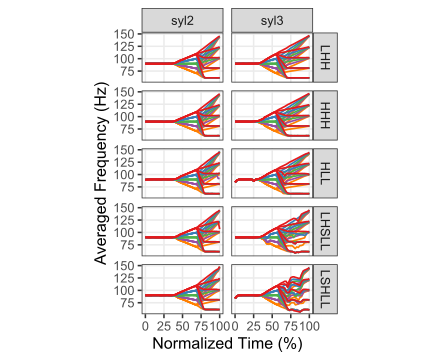

library(tidyverse)
library(targets)
library(sosprosody)
sf <- 100
exp_tag <- params$exptag
dep <- tar_read(assemble_resyntheses)
dep <- NULL
# dependency_string <- paste0(exp_tag, "_average_resynthesis")
# dependency <- do.call(what = tar_read, args = list(name = dependency_string)) # used to slot it into targets pipelineResynthesis Analysis
pt_path <- paste0("CalculatedFiles/", exp_tag, "_prepped_pt_", sf, ".RDS")
avg_path <- paste0("CalculatedFiles/",exp_tag,"_avg_resynth_", sf, ".RDS")
nuclear_path <- paste0(params$nucpath, sf, "/TextGrids/nuclear_regions.csv")
pitchtier_df <- readRDS(pt_path)
avg_contours_df <- readRDS(avg_path)
nuclear_regions <- read_csv(nuclear_path)
duplicates <-
pitchtier_df |>
group_by(utterance, tune) |>
# mutate(id = paste(utterance, tune, take, sep = "_")) |>
summarize(take = unique(take),
n_files = length(take)) |>
filter(n_files > 1) |>
group_by(utterance, tune) |>
mutate(is_duplicate = duplicated(tune)) |>
filter(is_duplicate)avg_plot <-
avg_contours_df |>
mutate(uid = paste(tune, pa_val, bt_val)) |>
ggplot(aes(x = timepoint_norm, y = avg_hz, group = uid, color = forcats::fct_rev(pa_val))) +
geom_line(size=.8) +
facet_grid(tune~wordset) +
scale_color_brewer(palette = 'Set1') +
theme_bw(base_size = 16) +
ylab("Averaged Frequency (Hz)") +
xlab("Normalized Time (%)") +
theme(legend.position = 'none',
panel.grid.minor = element_blank()) +
coord_fixed(ratio= 1/150) +
scale_x_continuous(breaks = seq(0,1,.25),
labels = seq(0,1,.25)*100)Warning: Using `size` aesthetic for lines was deprecated in ggplot2 3.4.0.
ℹ Please use `linewidth` instead.plotpath <- paste0("Figures/", exp_tag, "_resynth_avg_", sf, ".pdf")
ggsave(plotpath, avg_plot,
device = 'pdf', height = 11, width = 8.5)
hll_only_plot <-
avg_contours_df |>
mutate(uid = paste(tune, pa_val, bt_val)) |>
dplyr::filter(tune == 'HLL', wordset == 'syl2') |>
ggplot(aes(x = timepoint_norm, y = avg_hz, group = uid, color = forcats::fct_rev(pa_val))) +
geom_line(size=.8) +
scale_color_brewer(palette = 'Set1') +
theme_bw(base_size = 16) +
ylab("Pitch (Hz)") +
xlab("Normalized Time (%)") +
theme(legend.position = 'none',
panel.grid.minor = element_blank()) +
coord_fixed(ratio= 1/150) +
scale_x_continuous(breaks = seq(0,1,.25),
labels = seq(0,1,.25)*100) +
scale_y_continuous(breaks = seq(75,150,25),labels= seq(75,150,25),limits = c(61,150))
hll_plotpath <- paste0("Figures/HLL_syl2_avgresynth/", exp_tag, "_HLL_avg_", sf, ".pdf")
ggsave(hll_plotpath, hll_only_plot,
device = 'pdf', height = 6, width = 4)Warning: Removed 1 row containing missing values (`geom_line()`).avg_plot
utterance_plots <-
pitchtier_df |>
anti_join(duplicates) |>
ggplot(aes(x = timepoint_norm,
y = hz,
group = file,
color = forcats::fct_rev(pa_val))) +
geom_line() +
facet_grid(tune ~ utterance) +
theme_bw() +
scale_color_brewer(palette = 'Set1') +
# scale_color_manual(values = c("dodgerblue4", "firebrick")) +
theme(panel.grid.minor = element_blank(),
panel.grid.major = element_line(size = .2),
legend.position = 'none') Warning: The `size` argument of `element_line()` is deprecated as of ggplot2 3.4.0.
ℹ Please use the `linewidth` argument instead.plotpath <- paste0("Figures/", exp_tag, "resynth_utterances_", sf, ".pdf")
ggsave(plotpath, utterance_plots,
device = 'pdf',
width = 16, height = 8)
utterance_plots
Warning: Removed 1 row containing missing values (`geom_line()`).
Removed 1 row containing missing values (`geom_line()`).